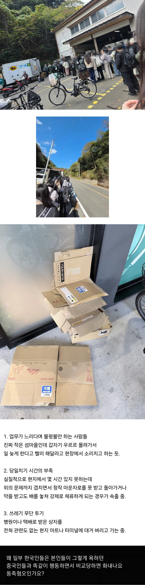

https://bbs.ruliweb.com/best/board/300143/read/77512346

https://bbs.ruliweb.com/best/board/300143/read/77512346

오늘도 대마도 혐한은 상승중
나는 일평생 살아가면서 한국이나 중국이나 비슷하다고 생각함. 특히 여자는 더 똑같음. 한녀 중녀 일녀 다 사겨봤는데 중녀가 좀 심하긴하지만 일녀에 비해면 진짜 그나물에 그밥
주갤 베트콩 이것들은 한결 같네 쌈마넌 벳남녀 매매 하는련들은 사겨 봣나?
뭔 소리 하는겨... 한국말 맞나
저기에 똥싸는 사진이 있으면 몰라도 중국을 너무 올려 치는거 아님? 중국인이 줄서는데 시비 폭행이 없다? 거기 중국인 없다임
사람사는거 거기서 거기임
중국 = 한국
저새끼들 병자호란때 환냥녀 후손일듯
화냥녀를 비하표현으로 쓰긴하지만 사실상 피해자가 아닐까
환향녀가 욕으로 쓰일만큼 차별을 받았고 사실상이 아니라 피해자가 맞지
유교 이념에 따른 정조를 잃렀다고 돌아온 고향에서조차 배척당한건데, 자의로 정조를 갖다 바친것도 아닌 힘없는 국가가 자기네 국민이 포로로 끌려가는 걸 막지 못한 탓인데 말이지.
오늘날 국어학계의 정설에 의하면, 창녀를 뜻하는 중국 외래어 花娘의 중세 한국어의 발음 '화냥'에 여자를 낮잡아 이르는 '년'이 결합되어 오늘날까지 이어진 것이다.
근데 신기할 정도로 일본=중국이라고 까면 욕먹음ㅋ
그야... 에티켓의 차이가
괜히 소중화겠냐
짱1깨가 5천만이었으면 그게 한국임 ㅋㅋ
원종이들 간만에 건수물어서 신났네
네 다음 조선인 ㅋㅋㅋㅋ
? 조선인을 욕으로 쓰는건 ㄹㅇ 원종이새끼네 이거ㅋㅋ
인생이 얼마나 비참하면 국뽕 따위에 매달려서 이렇게 유치하게 놀까...니 인생에서 유일하게 의지할게 그거 뿐이지?
원종이당
상식적으로 국뽕이 비참하겠냐 중국이랑 우린 비슷해 ㅠㅠ하고 자해하는게 비참한 인생이겠냐
한국에서 적응도 못하고 일뽕빨고 중뽕빠는 니가 더 비참한 인생이 아닐까 원종아?ㅋㅋ
자신의 비참한 인생 유일한 자존감이 한국인 그자체인게 원종이 타령단들임. 소속감의 범위가 클수록 시궁창 인생이라고 보면됨.
그래서 한국인 수준 떨어진다고 비판하면 리트냥이처럼 자살로 마감할 수밖에 없어서 필사적으로 원종이 타령하는 거임.
기본적으로 자존감이 있는 사람은 국적 민족과 자신을 분리할 줄 아는 능력이 있음.
진짜 원종이가 물었네 ㅋㅋㅋㅋㅋ
줴줴이야
중국인이였으면 저 박스 저렇게 두지도 않고 길거리에 그냥 방치+ 길거리에서 똥눔+ 길바닥에서 담배핌+소음공해
욕먹을건 중국이든 한국이든 욕하면되고 저건 욕먹을만하지 그냥 민폐인데.. 그래도 중국이랑 비교는 씹ㅋㅋ 그짝 민폐는 저수준이 아닌게 더 많자나ㅋㅋ
흡연충은 ㄹㅇ 중국인 그잡채. 반박시 흡연충
부모가 중국인이라서 그럼
괜히 우리 스스로도 소중국 소짱ㄲ라고 욕하는게 아니긴해 ㅋㅋ
진짜 생각보다 무개념에 양심도 없는 사람이 많은거같음
걍 소득수준 교육수준 차이지 비슷하다고 본다 ㅋㅋㅋㅋㅋ
돈도 없어서 일본으로 마운자로 사러가는 녀석들이, 귀국 못하는 극한 상황에 처하자 본성 내보인거지 뭘. 한국, 중국? 전세계가 다 똑같다.
돈 없는 거지새끼들이 인성 더 빻았음 거기에 플러스로 운동으로 뺄 생각안하고 아구통 교수 말 신봉하며 "마운자로 맞는게 필요함." 자위질해대는 이런 녀석들이 90퍼 가까이 됨. 진짜 10%정도 될까말까한 사람들이 유전적으로 결함있거나 뇌에 정신적인 문제나 호르몬 문제 있어서 물먹어도 살찌는 녀석들일텐데, 왜 본인이 그거라고 일반화를 시키는 건지 이해가 안가네... 하루종일 개드립만 해대서 댓글대는 녀석들보면 대다수가 90%일꺼 같은데 자기는 10%라고 바락바락 우겨대니...
야 귀국 못하면 섬에서 헤엄쳐서 빠져나와 알아서 살이 빠지겠다. 저런 녀석들 귀국 안시켜주면 알아서 살이 빠지는 효과 나올껄?
왜 개드립은 중국의 발전을 질투하시나요?!!
뭐 딱 중국과 소중국이지
근데 한국도 여러 명이 모이면 저렇게 되는 듯
자라니, 런장연 등
ㄹㅇ 요즘 국위선양한 일부때문에 좆병신같은 민폐련들이 어깨세우고 해외로 쳐나감....
병신은 언제 어디에나 있는거지 뭔 소중국 타령이여
저런애들 그냥 섬에 갇혀서 못나오는게 국익에 도움될거같은데
소중국임 ㅇㅇ